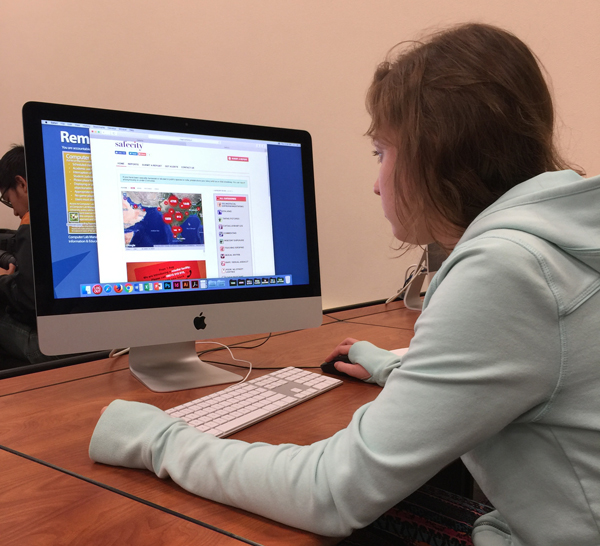

Needfinding
Observations

My inspiration for my app is an existing site called SafeCity. Upon viewing my classmate using the site, I noted some observations:
- The interface for reporting a sexual assault feels very clinical and "hospitally"
- The instructions on how to use the reporting system had excessive steps and required more user clicks than necessary to get to the form
- The categories of types of sexual assault make it easier to help users understand the various types of attack, especially when establishing hot spots of common types of assault
Brainstorm
Upon reviewing the observations in class, my users need a way to:
- Access the reporting interface easily and smoothly
- Feel like the interface is warm and accessible, not like a painful form
- Recognize which categories their assault report applies to
- Interact smoothly with a map to identify hotspots
- Navigate the interface with a minimum number of clicks
- Feel secure when using the app and ensuring anonymity
- Get from point A to point B by only have necessary buttons as options
- Be able to use the map as a plug-in, not externally
- See the hotspots and/or categories and not feel overwhelmed or scared
- Report their assault without feeling the need to relive it, possible through more of a menu-type selection of what happened or possible a pre-generated report so they only have to stated when, where and a category